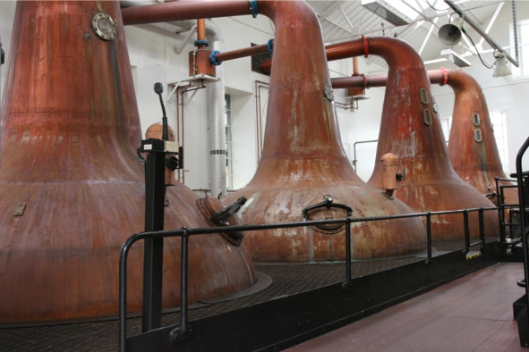

О культуре пития .. Классическая технология производства виски. .


Базовые ингредиенты всегда одни и те же: солод, дрожжи и вода. Иногда в готовый напиток добавляют немного сахара или карамели, но это больше относится к дешевым сортам. Ароматизаторов, красителей и прочих химических добавок в настоящем виски быть не может. Процесс производства состоит из следующих этапов:
Соложение. Виски делают из чистого ячменя или смеси зерновых культур, например, бурбон минимум на 51% состоит из кукурузы, а остальная часть приходится на другие злаки (ячмень, рожь и т. д.), также возможны чисто ржаные или пшеничные сорта. Редко, но встречаются виски из риса, гречихи, других злаков.
Высушенные в солнечном, хорошо проветриваемом помещении зерна заливают водой и оставляют прорастать, периодически меняя воду – так в злаках активируют ферменты, расщепляющие крахмал на простые сахара. Пророщенное зерно называется солодом. Весь процесс занимает до двух недель. Главное – вовремя остановить соложение зерен, чтобы ростки не «съели» весь крахмал, который будет нужен на следующих этапах. Виски из несоложеного (непророщенного) сырья называется «зерновым». Фактически это выдержанный в бочках обычный спирт с грубым вкусом и практически полным отсутствием ароматического букета. Зерновой виски не продается как отдельный напиток, а лишь подмешивается в купажи к «благородным» дистиллятам.
Просушка солода. Готовый солод извлекают из воды и просушивают в специальной камере. В Шотландии на острове Айла и в Японии дополнительно используют дым болотного торфа, чтобы готовый виски приобрел характерный «копченый» вкус и дымный аромат.
Приготовление сусла. Сусло делают так: сухой солод очищают от посторонних примесей, подвергают нескольким тестам на уровень влажности, заражение паразитами и т. д. Прошедшие проверку пророщенные и высушенные зерна перемалывают в крупную муку и подвергают процессу затирания (смешиванию с водой). Помол пересыпают в сусловарочный котел, заливают водой и постепенно нагревают, не забывая помешивать. Будущее сусло последовательно проходит несколько температурных режимов с выдержанными температурными паузами:
– 38—40 °С – мука и вода превращаются в однородную массу;
– 52—55 °С – расщепляется белок;
– 72—75 °С – крахмал осахаривается (превращается в подходящий для дрожжей сахар);
– 76—78 °С – формируются окончательные сахаристые вещества.
Брожение. Осахарившееся сусло заливают в деревянные или стальные чаны и смешивают со специальными спиртовыми дрожжами (каждое солидное предприятие старается иметь свой уникальный штамм). На многих винокурнях дрожжи берут из предыдущей партии браги, в результате процесс становится цикличным и длится десятки, а иногда и сотни лет.
На брожение отводится 2—3 дня при температуре около 37° C. Дрожжи активно размножаются, питаясь кислородом, когда же кислород в браге заканчивается, начинается расщепление сахара, полученного из крахмала в зерне. В конце этой фазы наступает время малолактической ферментации – сбраживания сусла за счет кисломолочных бактерий, а не дрожжей. Готовая к перегонке брага крепостью 5% об. по вкусу напоминает пиво, но без хмеля.
Дистилляция. Отыгравшую брагу подвергают двойной или тройной дистилляции (в зависимости от производителя) в медных перегонных кубах – аламбиках. Материал оборудования очень важен: медь избавляет спирт от «сернистого» привкуса и провоцирует химические реакции, в результате которых в букете виски появляются ванильные, шоколадные и ореховые тона. Впрочем, на новых производствах иногда устанавливают оборудование из нержавеющей стали. После первой перегонки брага превращается в «слабое вино» крепостью около 30% об. Чтобы получить 70-процентный виски, необходимо провести вторую дистилляцию.

Перегонные кубы для дистилляции виски
Для дальнейшего производства виски используют только срединную порцию («сердце»), первую и последнюю фракции («головы» и «хвосты») сливают или отправляют в ректификационную колонну для получения чистого спирта. Даже форма аламбика имеет значение: каждая выемка на медном боку влияет на вкус дистиллята. Поэтому когда на старых вискокурнях меняют оборудование, новое отливают точно по лекалам прежнего, сохраняя все дефекты, «погнутости» и вмятины. Для производства зернового виски и бурбона зачастую вместо традиционного двухкамерного аламбика используют аппарат непрерывной перегонки Коффи. Это устройство перегоняет брагу не порционно, а постоянно. Такой способ производства экономит время и расходы на дистилляцию, но ухудшает качество виски.
Готовый дистиллят разбавляют мягкой родниковой водой до 50—60% об. Некоторые винокурни предпочитают жесткую воду с высоким содержанием микроэлементов, такой виски приобретает характерный минеральный привкус.
Выдержка. Традиционно виски выдерживают в дубовых бочках из-под хереса, но для дешевых сортов иногда берут емкости из-под бурбона (американский виски «стареет» в новых, обожженных изнутри бочках) или даже абсолютно новые, не использованные ранее бочки.
На данном этапе окончательно формируется букет напитка, появляется благородный карамельный оттенок и аромат. В это же время проходят шесть основных процессов:
– экстракция («вытягивание» из древесины аромата, танинов);
– испарение (бочки закрывают не герметично, спирт постепенно испаряется);
– окисление (альдегидов при взаимодействии с материалом бочки);
– концентрация (чем меньше объем жидкости, тем насыщеннее аромат);
– фильтрация (через мембранные фильтры, непосредственно перед купажированием или розливом);
– колоризация (при помощи карамели, чтобы напиток выглядел «благороднее»).
Средний срок выдержки составляет 3—5 лет, но существуют сорта, которые проводят в бочках 30 лет и более. Чем дольше выдерживается виски, тем больше «доля ангелов» – объем испарившегося алкоголя – и выше цена. Со временем древесина дуба впитывает из спирта большинство сивушных масел, насыщает напиток лактонами, кумарином и танином, однако если передержать, виски приобретет «деревянный» привкус.
Купажирование. Представляет собой процесс смешивания дистиллятов (иногда в состав еще добавляют зерновые спирты) разного срока выдержки и (или) с разных винокурен. Единого рецепта нет: у каждой марки свои секреты. Количество смешиваемых сортов может доходить до 50, и все они будут отличаться по вкусу и выдержке. Пропорции подбирает опытный мастер производства – купажист. Обычно такой человек трудится на предприятии десятки лет и задолго до выхода на пенсию готовит себе замену из числа других сотрудников, постепенно передавая секреты и наработки.
Смысл купажирования в том, чтобы гарантировать покупателю неизменный вкус любимого бренда из года в год, независимо от особенностей урожая или технологии. Также смешивание позволяет создавать новые виски с уникальным вкусом (расширять ассортимент продукции) из доступных предприятию дистиллятов, меняя только пропорции.
Купажирование не является обязательным этапом: многие ценители предпочитают пить чистый односолодовый виски, произведенный одной винокурней, эта категория называется single malt, а купажированный виски маркируют надписью blended. Споры о превосходстве одной категории над другой не имеют смысла, это больше вопрос вкуса и философии, чем реального влияния технологии производства на качество.
Купажированный виски еще несколько месяцев выдерживают в дубовых бочках, чтобы смешанные сорта «поженились» – превратились в один гармоничный напиток, а не коктейль вкусов.
Розлив. После финальной выдержки виски проходит фильтрацию (механическую, чтобы отделить жидкость от частичек дерева, других твердых фракций), иногда напиток еще раз разбавляют водой до получения предусмотренной регламентом крепости. Только после этого готовый продукт разливают в бутылки и отправляют в магазины.
На дешевых производствах иногда практикуют сомнительный метод холодной фильтрации, когда виски охлаждают приблизительно до -2° C. В результате жирные кислоты всплывают на поверхность и легко удаляются механическим путем. После холодной фильтрации виски теряет часть органолептических свойств (аромата и вкуса), но выглядит презентабельнее – не мутнеет в стакане при добавлении льда, кажется янтарным и прозрачным.
`